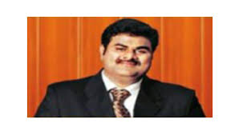

| |
Principal sir
Mr. A.V.N. REDDY, completed his post graduation in Chemistry and worked as Lecturer and Principal in various government colleges from 1975.Mr. A. Pavan Reddy, the younger son, credited with international exposure adds to the futuristic vision of DPS while still coming from the same school of thought as his father and brotherMr. A. Pavan Reddy, the younger son, credited with international exposure adds to the futuristic vision of DPS while still coming from the same school of thought as his father and brother |
|  |
chairman sir
Mr. A. Naveen Reddy, the elder son has taken up his father's mantle, and shares his father's penchant for quality education. With his managerial skills and acumen DPS has been taking giant leaps in terms of its achievements.Mr. A. Pavan Reddy, the younger son, credited with international exposure adds to the futuristic vision of DPS while still coming from the same school of thought as his father and brotherMr. A. Pavan Reddy, the younger son, credited with international exposure adds to the futuristic vision of DPS while still coming from the same school of thought as his father and brother |